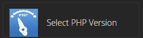
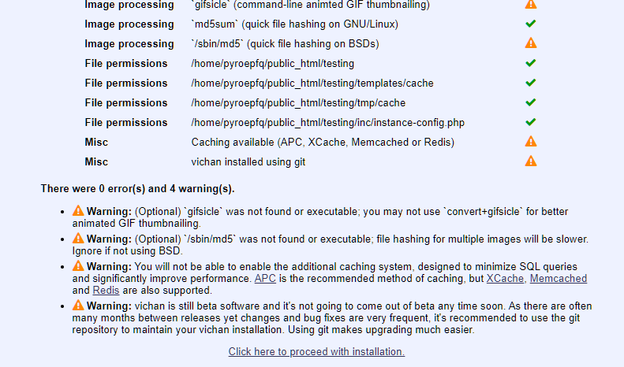
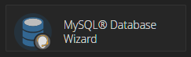
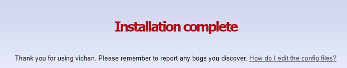
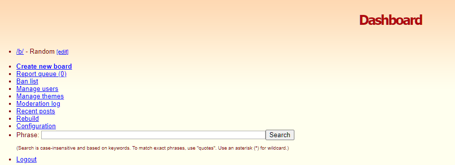

Create your own Imageboard!
Have you ever wanted to make your own imageboard, but you dont have dedicated hosting? Well this is a in-depth guide on how to get your own forum without having to cough up money to Namecheap for dedicated hosting!
Step 1: Get hosting
Wait! Didnt you just say no dedicated hosting? Well yes. But I meant the $20 a month type that give you an entire linux machine. With this all you need is a cpanel and around 20gigs of storage. I reccomnd using Namcheap for your hosting although you can use whatever you want.
Step 2: Get the software
The best software to use is lainchan which is a fork of Tinyboard. This software works really well. I have used it in the past and it has almost no issues that i have noticed!
There are certain requirments to using this software. I will list them here!
- PHP >= 5.4
- MySQL Server
- mbstring
- PHP GD
- PHP PDO
You can enable the last 3 in the Select PHP Version tab on your cpanel.
Step 3: Install it!
Go ahead and download the zip from the github page. Then upload it into any directory. (Note this can take a little while) Extract it and follow the proceeding steps.
Navigate yourself to the install.php file and click on it.
Accept the terms of service and then click the Click here to proceed with installation button.
Now this is the tricky part for people who dont know how to use MySQL. But if you followed my advice and got cpanel this should not be very hard. Go head and go to the MySQL Database Wizard button on your cpanel and create a database.
Then just copy pate the info of your database into the install menu. Make sure you give it all of the permissions.
Once you have filled out all of the information you can then finish the instillation!
Step 4:Setting up your imageboard
The first board you will have on your forum is /b/ which if you are like anyone else. You wanna delete. Go to mod.php and login using the default credintials admin / password.

From this menu you can moderate your board, change settings on your board, ban members, unban members, and do all of that stuff. By this point you are all done! You can go to the Manage themes page and download some things like a homepage or a overchan. Really it is up to you at this point.
Step 5: Moderating your board
Imageboard culture dose attract alot of illegal content sometimes. So make sure to moderate your boards. If you dont have alot of time, I reccomend you get some other people to do it for you! You can create multiple accounts for the mod panel and give them certain perms. But your best bet really is to just make your board request-only. Because that way you have to approve of posts before they go public. Although that dose cripple any real-time conversation.
Thats it!
If you have any bugs with the software you can report them on the lainchan github page as I did not create the software. Anyways I hope you guys found this useful!